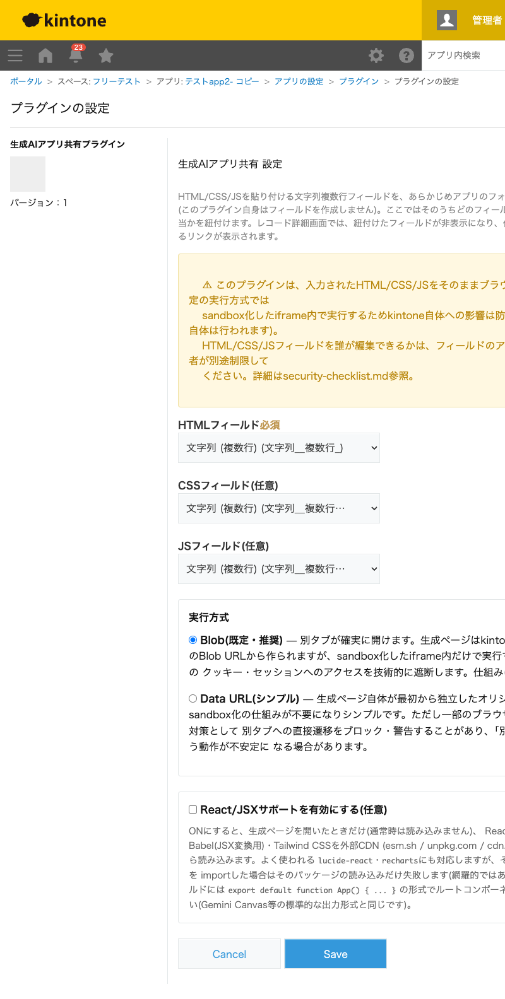

GovAppsプラグイン 安全性を確認できる無料kintoneプラグイン集
Gemini Canvas等の生成AIツールでその場で作ったHTML/CSS/JS(Reactを使ったコードも含む)を、 文字列複数行フィールドにコピペするだけで「動くアプリ」としてレコードから開けるようにする プラグインです。レコード詳細画面では入力フィールドが自動的に隠れ、代わりに別タブで実行する リンクが表示されます。実行は必ずsandbox化した領域の中で行われ、kintoneのクッキー・セッションには 一切アクセスできません。
Gemini Canvas等で作った電卓・チェックリスト・簡易シミュレーターなどのHTML/CSS/JSをそのままフィールドに貼り付けるだけで、そのレコードの担当者や関係者が別タブですぐに開いて使えるようになります。ファイルのアップロードや外部サービスへの公開は不要です。
設定で「React/JSXサポート」を有効にすると、export default function App() { ... }形式のReactコンポーネント(lucide-reactのアイコンやrechartsのグラフを使ったコードを含む)をそのまま実行できます。生成AIが出力した「タスク管理」「集計ダッシュボード」のような簡易Webアプリを、レコードに貼り付けるだけで動く形で残せます。
HTML/CSS/JSフィールドを誰が編集できるかは、フィールドのアクセス権設定でアプリ管理者が別途制限してください(このプラグイン自身はフィールドの編集権限を制御しません)。詳細画面のリンクには、直近の作成者名を含む警告文が常に表示されます。
このプラグインは「入力されたHTML/CSS/JSを実行する」ことが機能そのものであり、一般的なXSS対策(値をエスケープして表示する)は原理的に適用できません。そのため「実行させないようにする」のではなく「実行させた場合の影響範囲を技術的に限定する」設計にしています。
Blobで作成したURLはkintoneと同じオリジンを引き継ぐ(Web標準の仕様)ため、素朴に別タブで開くとkintoneのクッキー・セッションへ理論上アクセスできてしまいます。これを防ぐため、実際のHTML/CSS/JSはsandbox="allow-scripts allow-modals allow-forms allow-popups"(allow-same-originを含めない)を指定したiframeの中だけで実行し、kintoneと切り離された一意のオリジンとして扱われるようにしています。target="_blank" rel="noopener noreferrer"を設定し、開いたタブから元のkintoneタブを操作されること(タブナビング)を防いでいます。詳細な確認項目・確認日は下記GitHubのチェックリストに全項目を掲載しています。

このプラグインはREST APIを一切実行しません。フィールドの表示/非表示や一覧取得は
kintone.app.record.setFieldShown()・kintone.app.getFormFields()等の
JavaScript APIのみで行い、生成ページの実行はBlob/data:URLとして
ブラウザ内で完結します。API実行数制限に影響することはありません(React/JSXサポートを
有効にした場合のみ、生成ページを開いたときに外部CDNへの通信が発生しますが、これはkintoneの
API実行数とは無関係です)。